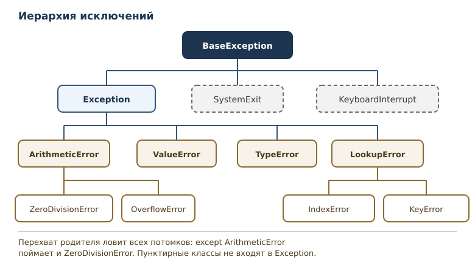
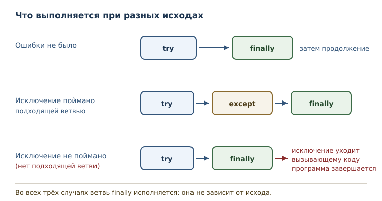

Ошибки и исключения
Как Python сообщает об ошибках, как их обрабатывать, поднимать и не подавлять.
В этой главе
До этой главы любая неудачная операция обрывала программу: вы видели сообщение об ошибке и могли только исправить код и запустить его снова. Для учебных примеров этого хватало. Настоящая программа работает с чужими данными: пользователь вводит не то, файл оказывается недоступен, сеть пропадает. Падать в такой ситуации нельзя, поэтому Python даёт механизм, который отделяет обнаружение проблемы от её обработки. В этой главе вы научитесь читать сообщения об ошибках, перехватывать их, поднимать собственные и выбирать, где именно обрабатывать сбой.
10.1 Зачем эта глава
Ошибка — не приговор программе, а информация. Интерпретатор сообщает, что именно не получилось и в каком месте. Вопрос в том, кто и как на это сообщение реагирует. Пока реакции нет, реакция одна: остановка.
Посмотрите, что происходит при попытке превратить в число текст с пробелом внутри.
print(int("19 98"))
ValueError: invalid literal for int() with base 10: '19 98'
Программа остановилась на этой строке. Всё, что было после неё, не
выполнилось. Хорошо ли это? Зависит от задачи. Если число ввёл
пользователь, разумно попросить его исправить ввод и продолжить. Если
неверные данные пришли из файла конфигурации, разумно остановиться, но
с понятным сообщением, а не с чужим текстом про base 10. Обработка
ошибок — это проектирование такой реакции.
После этой главы вы сможете:
- объяснять, чем исключение отличается от синтаксической ошибки;
- перехватывать конкретные типы исключений и не перехватывать лишние;
- поднимать исключения самостоятельно и сохранять их причину;
- писать функции, которые сообщают о проблеме вызывающему коду;
- отличать утверждение (внутренний инвариант) от проверки данных.
10.2 Как Python сообщает об ошибке
Синтаксические ошибки и ошибки времени выполнения вы уже встречали в первой главе. Коротко напомним разницу. Синтаксическая ошибка возникает при разборе текста: код не соответствует грамматике языка, и программа не запускается вовсе. Ошибка времени выполнения возникает позже, когда синтаксически верная инструкция не может быть исполнена с теми данными, которые ей достались.
Вторую категорию Python оформляет как исключение — объект, который
сигнализирует об ошибке и прерывает нормальное исполнение до момента его
обработки. У каждого исключения есть тип исключения — класс, который
определяет категорию проблемы. ValueError сообщает: значение не
подходит. TypeError сообщает: операция не определена для значений таких
типов. ZeroDivisionError сообщает: делитель равен нулю.
Тип исключения важнее текста сообщения. Текст может меняться между версиями Python и зависит от конкретных данных, а тип — часть контракта языка. Поэтому в коде проверяют тип, а текст показывают человеку.
Важное уточнение: не всякое исключение означает ошибку программиста.
Прерывание с клавиатуры (KeyboardInterrupt) и штатное завершение
(SystemExit) тоже исключения, но они не относятся к сбоям логики. Об
этом различии — в разделе об иерархии.
10.3 Инструкция try и ветвь except
Обработка строится из двух частей: опасный код помещают в инструкцию try, а реакцию на конкретную проблему — в ветвь except. Если внутри try исключение не возникло, ветви except пропускаются. Если возникло, исполнение try прерывается, и управление переходит к подходящей ветви.
def safe_divide(total, parts):
try:
return total / parts
except ZeroDivisionError:
return None
print(safe_divide(100, 4))
print(safe_divide(100, 0))
25.0
None
Разберём по шагам. При вызове safe_divide(100, 4) деление проходит
успешно, функция возвращает 25.0, ветвь except не исполняется. При
вызове safe_divide(100, 0) деление поднимает ZeroDivisionError,
исполнение try прерывается на этой строке, управление попадает в ветвь
except, и функция возвращает None.
Обратите внимание на границу блока try: в него входит только деление. Если бы в try стояло ещё несколько инструкций, они были бы пропущены при исключении. Чем уже try, тем точнее обработка: вы ловите ровно ту операцию, которая может не получиться.
10.4 Объект исключения
Исключение — обычный объект. Его можно связать с именем через
конструкцию as и посмотреть, что внутри.
def parse_year(text):
try:
return int(text)
except ValueError as error:
print(type(error).__name__)
print(error)
return None
print(parse_year("1998"))
print(parse_year("19 98"))
1998
ValueError
invalid literal for int() with base 10: '19 98'
None
Здесь видны три вещи. Во-первых, type(error).__name__ даёт имя класса —
ValueError. Во-вторых, print(error) выводит текст сообщения: у
исключений определён человекочитаемый вид. В-третьих, имя error живёт
только внутри ветви except: после выхода из неё это имя удаляется, чтобы
не тащить ссылку на объект дальше.
Связывать имя необязательно. Если сообщение не нужно, достаточно указать
тип: except ZeroDivisionError:. Но если вы собираетесь записать ошибку в
журнал или показать её пользователю, имя пригодится.
10.5 Несколько ветвей except
У одной инструкции try может быть несколько ветвей except. Сработает первая подходящая, остальные будут пропущены.
def describe(text):
try:
return int(text)
except ValueError:
return "не число"
except TypeError:
return "не строка"
print(describe("2026"))
print(describe("две тысячи"))
print(describe(None))
2026
не число
не строка
Три вызова дают три разных исхода. "2026" разбирается как число.
Строка "две тысячи" вызывает ValueError: это не запись целого
числа. Значение None вызывает TypeError: int не умеет
работать с таким типом.
Проверять тип исключения стоит по смыслу, а не по привычке. Если функция
принимает текст и разбирает его, ValueError — ожидаемая проблема, её
обрабатывают. TypeError в той же функции означает ошибку вызывающего
кода: он передал не строку. Часто такую ошибку лучше не ловить, а
исправить вызов.
10.6 Иерархия исключений
Типы исключений образуют иерархию исключений: дерево классов, в
корне которого стоит BaseException. Перехват базового класса
перехватывает и все его подклассы. Именно поэтому порядок ветвей except
имеет значение.

Проверить родство классов можно функцией issubclass.
print(issubclass(ZeroDivisionError, ArithmeticError))
print(issubclass(ArithmeticError, Exception))
print(issubclass(Exception, BaseException))
print(issubclass(KeyboardInterrupt, Exception))
True
True
True
False
Из этого следуют практические выводы. Ветвь except ArithmeticError:
поймает и ZeroDivisionError, и OverflowError: оба потомки
арифметической ветви. Ветвь except Exception: поймает почти всё, что
может случиться при обычной работе программы. А KeyboardInterrupt и
SystemExit сидят выше Exception, поэтому в неё не попадают: их не
следует глушить случайным обработчиком.
Отсюда правило: ловите Exception, а не BaseException, если нет
особой причины. И ещё одно: не пишите except Exception: там, где
достаточно конкретного типа.
10.7 Порядок ветвей except
Интерпретатор проверяет ветви сверху вниз и останавливается на первой подходящей. Если широкий тип стоит раньше узкого, узкая ветвь становится недостижимой.
def describe(text):
try:
return int(text)
except Exception:
print("перехватила широкая ветвь")
return None
except ValueError:
print("сюда управление уже не попадёт")
print(describe("abc"))
перехватила широкая ветвь
None
Ветвь except ValueError не выполнится никогда: ValueError — потомок
Exception, а широкая ветвь стоит выше. Python не считает это ошибкой
синтаксиса, поэтому такой код запускается. Читателю же он врёт: строчка
про ValueError создаёт впечатление, что проблема обработана отдельно.
Собирая несколько ветвей, выстраивайте их от конкретного к общему:
try:
value = int(text)
except ValueError:
value = 0
except TypeError:
value = 0
10.8 Ветвь finally
Ветвь finally исполняется всегда: и когда try завершилась успешно, и
когда возникло исключение, и даже когда из try был сделан return.
Служит она для освобождения ресурсов — действий, которые обязаны
произойти независимо от исхода.
def report(total, parts):
try:
print("результат:", total / parts)
except ZeroDivisionError:
print("деление на ноль")
finally:
print("ветвь finally отработала")
report(10, 4)
report(10, 0)
результат: 2.5
ветвь finally отработала
деление на ноль
ветвь finally отработала
Оба вызова закончились строкой про finally, хотя первый шёл по успешному пути, а второй — через обработку ошибки. Порядок вывода важен: finally идёт последней, после тела try или ветви except.
Три возможных исхода удобно держать перед глазами одной схемой.

У finally есть ловушка. Если в ней стоит return, он перекроет результат
try и молча отбросит исключение.
def mystery():
try:
return "из try"
finally:
return "из finally"
Вызов mystery() вернёт "из finally". Python 3.14 при разборе такого
кода выдаёт даже предупреждение. Вывод простой: не возвращайте значения
из finally, оставьте ей только освобождение ресурсов.
10.9 Ветвь else и полный порядок выполнения
Адаптировано из репозитория trekhleb/learn-python (MIT, ревизия 5e4fad5):
примеры переведены и переработаны, добавлен разбор порядка выполнения. Изменения:
код переписан в исполняемом виде, сообщения на русском.
Кроме except и finally у инструкции try есть третья ветвь — else.
Она выполняется, только если в блоке try не произошло исключения. Это
позволяет отделить «код, который может упасть» от «кода, который выполняется
только при успехе»: если исключение возникло, блок else пропускается.
message = ""
try:
message += "Успех."
except NameError:
message += "Что-то пошло не так."
else:
message += " Ошибок не было."
finally:
message += " Проверка завершена."
print(message)
Успех. Ошибок не было. Проверка завершена.
Теперь тот же код, но в try есть ошибка — обращение к неопределённому имени:
message = ""
try:
print(undefined_name)
except NameError:
message += "Переменная не определена."
else:
message += " Ошибок не было."
finally:
message += " Проверка завершена."
print(message)
Переменная не определена. Проверка завершена.
Сравнение двух запусков показывает правило:
| Ситуация | except |
else |
finally |
|---|---|---|---|
| исключения нет | пропускается | выполняется | выполняется |
| исключение поймано | выполняется | пропускается | выполняется |
| исключение не поймано | — | пропускается | выполняется |
finally выполняется всегда: и при успехе, и при пойманном исключении, и
даже тогда, когда в try стоит return. Именно поэтому в finally помещают
освобождение ресурсов, а не «продолжение работы». Порядок важен: finally
выполняется после except/else, но до того, как управление покинет
инструкцию.
Типичная ошибка — помещать в else код, который может упасть, и ждать, что
его поймает тот же except. Не поймает: else выполняется вне защищённого
блока try. Если операция после успешного try тоже может дать исключение,
её нужно обернуть отдельно.
Источник и характер изменений зафиксированы в provenance/10-errors-exceptions.yaml.
10.10 Инструкция raise
До сих пор вы только принимали исключения. Но функция, которая обнаружила проблему, должна уметь о ней сообщить. Для этого есть инструкция raise: она поднимает исключение и передаёт управление обработчику.
def make_age(age):
if not isinstance(age, int) or isinstance(age, bool):
raise TypeError(f"возраст должен быть целым, получено {type(age).__name__}")
if not 0 <= age <= 150:
raise ValueError(f"возраст вне диапазона: {age}")
return age
print(make_age(42))
try:
make_age(200)
except ValueError as error:
print("отклонено:", error)
42
отклонено: возраст вне диапазона: 200
Здесь два разных нарушения и два разных типа исключения. Неверный тип
аргумента — TypeError: это ошибка вызывающего кода. Неверное значение
допустимого типа — ValueError: данные не подходят по смыслу. Такое
разделение помогает вызывающему коду решать, что делать: TypeError
обычно означает дефект и должен дойти до разработчика, ValueError
можно показать пользователю.
Текст сообщения пишите для человека, который будет его читать. В нём
полезно указать, какое значение пришло и какое ожидалось. Бесполезное
raise ValueError("ошибка") заставляет читать код, чтобы понять причину.
Внутри ветви except голый raise без аргумента повторно поднимает
текущее исключение. Этот приём нужен, когда вы хотите что-то записать, но
не хотите скрывать проблему от вызывающего кода:
try:
value = int(text)
except ValueError:
# записываем факт и пробрасываем дальше
raise
10.11 Цепочка исключений
Функция может перехватить низкоуровневое исключение и поднять своё,
более понятное. При этом важно не потерять исходную причину. Для этого
служит цепочка исключений — конструкция raise ... from ...,
которая сохраняет исходное исключение.
def parse_ratio(text):
try:
return int(text)
except ValueError as error:
raise ValueError(f"коэффициент должен быть целым: {text!r}") from error
try:
parse_ratio("много")
except ValueError as error:
print("сообщение:", error)
print("причина:", repr(error.__cause__))
сообщение: коэффициент должен быть целым: 'много'
причина: ValueError("invalid literal for int() with base 10: 'много'")
Новое исключение говорит на языке вашей задачи, а исходное остаётся
доступным в атрибуте __cause__ и печатается в отчёте об ошибке. Без
from Python тоже сохранит связь в атрибуте __context__, если
исключение возникло внутри ветви except, но явное from делает
намерение очевидным.
Пишите from error, когда новое исключение объясняет старое. Пишите
from None, когда низкоуровневая деталь не нужна читателю. Оставлять
связь случайной не стоит: она либо помогает диагностике, либо шумит.
10.12 Утверждения: assert
Утверждение — проверка assert, которая выражает внутренний
инвариант: условие, которое обязано быть истинным, если код написан
правильно. Утверждение не предназначено для проверки пользовательских
данных.
def checked_sqrt(value):
assert value >= 0, "корень определён только для неотрицательных чисел"
return value ** 0.5
print(checked_sqrt(16))
try:
checked_sqrt(-4)
except AssertionError as error:
print("AssertionError:", error)
4.0
AssertionError: корень определён только для неотрицательных чисел
Ключевая особенность: при запуске с ключом -O интерпретатор удаляет
инструкции assert из кода. Проверка исчезает, и программа продолжает
работу с неверным состоянием. Поэтому assert подходит для отладки и
внутренних гарантий, но не заменяет проверку входных данных. Если
значение пришло извне, поднимайте ValueError явно.
10.13 Политика обработки ошибок
Обработка ошибок — это политика реакции на сбои: где их ловить, где пробрасывать и что сообщать вызывающему коду. Универсального рецепта нет, но есть три вопроса, на которые полезно ответить для каждой операции.
Первый: может ли вызывающий код осмысленно отреагировать? Если да, пробрасывайте исключение наверх и опишите контракт в docstring. Если нет — например, проблема в конфигурации, без которой программа бесполезна, — обработайте её на верхнем уровне и завершитесь с понятным сообщением.
Второй: что именно вы ловите? Ловите самый узкий тип, который описывает
ожидаемую проблему. Широкий перехват скрывает дефекты: AttributeError
из-за опечатки в имени метода выглядит как «не удалось обработать
данные».
Третий: что вы делаете в ветви except? Молчание — худший вариант. Программа продолжает работу с неверным состоянием, и ошибка всплывает далеко от места. Как минимум запишите факт в журнал.
Есть два стиля проверки условий. Можно сначала проверить условие, а
потом действовать: «если текст состоит из цифр, то преобразовать».
Можно действовать и обрабатывать исключение: «попробовать преобразовать,
перехватить ValueError». Второй стиль в Python считается
предпочтительным для операций, которые сами умеют сообщать о проблеме.
def read_quantity(text):
try:
value = int(text)
except ValueError:
return 0
return value
print(read_quantity("7"))
print(read_quantity("семь"))
7
0
Функция пытается выполнить операцию и обрабатывает только ту ошибку,
которую ждёт. Всё остальное — например, TypeError при передаче None —
уйдёт вызывающему коду. Это и есть точная обработка: понятная реакция на
ожидаемое и честное падение на неожиданном.
10.14 Типичные ошибки
Голый except. Ветвь except: перехватывает вообще всё, включая
прерывание с клавиатуры и завершение интерпретатора.
def load(text):
try:
return int(text)
except:
return 0
Первое нажатие Ctrl+C будет проглочено, и программа продолжит работу, а причина сбоя теряется. Пишите конкретный тип.
Перехват и молчание. Ветвь, которая ничего не делает, превращает ошибку в неверный результат.
try:
total = int(text)
except ValueError:
pass # значение осталось прежним, но об этом никто не знает
Если обработать нечего, лучше пробросить исключение дальше.
Широкий перехват вместо узкого. except Exception: вокруг целой
функции ловит и ошибки данных, и опечатки в коде. Отлаживать такой код
мучительно: все дефекты выглядят одинаково.
Неправильный порядок ветвей. Ветвь с базовым классом выше ветви с подклассом делает нижнюю недостижимой. Проверяйте порядок от конкретного к общему.
assert для проверки ввода. При запуске с -O проверка исчезнет, и
программа примет неверные данные. Для внешних данных используйте
raise ValueError(...).
raise вне обработки. Голый raise вне ветви except поднимает
RuntimeError: No active exception to reraise. Если нужно поднять новое
исключение, укажите его явно.
10.15 Упражнения
1. Порядок вывода
Прочитайте код и запишите вывод, не запуская его.
def check(value):
try:
print("try:", 10 / value)
except ZeroDivisionError:
print("except: деление на ноль")
finally:
print("finally: конец")
check(2)
check(0)
Затем запустите код и сверьтесь. Объясните порядок строк в каждом вызове.
2. Исправление падения
Функция падает на неверном вводе:
def to_number(text):
return int(text) * 2
Перепишите её так, чтобы при нечисловом тексте она возвращала None, а
не завершала программу. Какой тип исключения вы перехватите и почему
именно его?
3. Значение по умолчанию
Напишите функцию safe_int(text, default), которая возвращает результат
int(text), а при невозможности разбора возвращает default.
Проверьте её на "15", "1 5" и "".
4. Недостижимая ветвь
Объясните, почему вторая ветвь никогда не выполнится, и перепишите код так, чтобы обе ветви имели смысл.
try:
value = int(text)
except Exception:
value = None
except ValueError:
value = 0
5. Собственное исключение
Напишите функцию check_score(score), которая принимает целое число от 0
до 100. При неверном типе поднимайте TypeError, при неверном
диапазоне — ValueError с указанием полученного значения. Покажите оба
случая в действии.
6. Сохранение причины
Есть функция, которая разбирает продолжительность в минутах:
def parse_minutes(text):
return int(text)
Оберните её так, чтобы при ошибке разбора поднималось ValueError с
сообщением «продолжительность должна быть целым числом минут» и
сохранялась исходная причина через raise ... from .... Выведите
сообщение и repr причины.
7. Что вернёт функция
Что выведет вызов mystery()? Объясните, почему результат именно такой,
и перепишите функцию так, чтобы finally не влияла на возвращаемое
значение.
def mystery():
try:
return "из try"
finally:
return "из finally"
8. Иерархия на практике
Не запуская код, определите, какие вызовы попадут в ветвь except ArithmeticError, какие пройдут по успешному пути и какой вызов приведёт к
падению программы. Затем проверьте ответ запуском, перехватив падение
снаружи.
def classify(value):
try:
print(100 / value)
except ArithmeticError:
print("арифметическая проблема")
classify(0)
classify(4)
classify("ноль")
9. Утверждение или проверка
В функции ниже смешаны два вида проверок. Разделите их: внутренний
инвариант оставьте утверждением, а проверку пользовательского значения
оформите через raise.
def withdraw(balance, amount):
assert balance >= 0
assert amount > 0
return balance - amount
10. Мини-задача: безопасная операция
Напишите функцию safe_operation(a, op, b), которая выполняет одну из
операций "+", "-", "*", "/" над числами a и b. Требования:
- при неизвестной операции поднимайте
ValueError; - деление на ноль обрабатывайте внутри и возвращайте строку
"деление на ноль"; - в остальных случаях возвращайте число.
Проверьте функцию на всех четырёх операциях, на неизвестной операции и на делении на ноль.
10.16 Проверка понимания
- Чем исключение отличается от синтаксической ошибки по моменту возникновения и по последствиям?
- Почему тип исключения важнее текста сообщения?
- Как интерпретатор выбирает ветвь except, если подходят несколько?
- Зачем нужна ветвь finally, если исключение всё равно прерывает исполнение?
- Чем
raise ValueError(...) from errorотличается отraise ValueError(...)? - Почему assert нельзя использовать для проверки пользовательского ввода?
- В каком случае функцию лучше не перехватывать исключение, а дать ему уйти вызывающему коду?
10.17 Что дальше
Вы научились перехватывать сбои и сообщать о них. Но обработка ошибок не помогает понять, почему программа ведёт себя неверно, когда исключения нет: результат просто неправильный. Этим занимается отладка — чтение трассировки, отладчик, логирование и систематический поиск дефектов. Об этом — в главе «Отладка и трассировка».